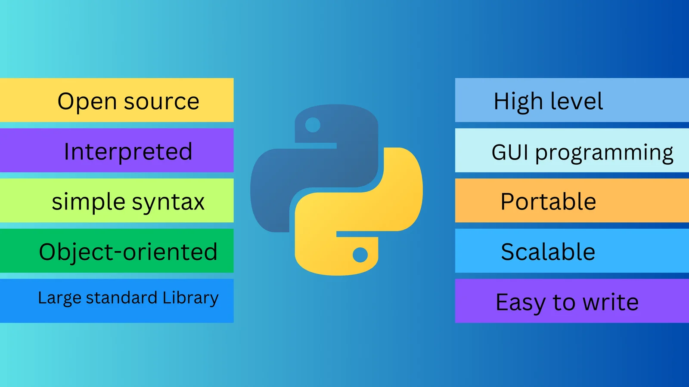

Python, the beginner friendly language
Why python is so appealing
- Easy to read and learn
- Open Source! It's free and constantly getting better
- Used subjects such as Artificial Intelligence, data science and automation
Common Uses
- QA automation via scripts
- AI: Machine learning
- Web development
Sources: DataCamp Blog: What is Python Used For?